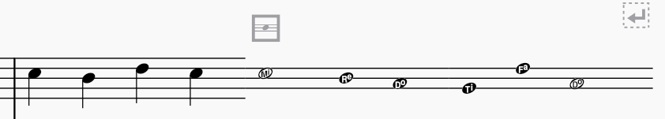

谱表类型更改
概述
谱表的“类型”指它的属性：线数、线之间的距离、其上出现的符头种类等。要在整份乐谱中更改谱表的类型，参见 配置谱表 和 谱表/分谱属性。不过，也可以从乐谱的任意小节开始更改谱表的外观，方法是应用一个 谱表类型更改 元素，然后在 属性 面板中调整其属性。这可以用于在有音高谱表和无音高谱表之间切换，或用于各种实验性记谱效果。

一个谱表类型更改元素的示例
添加谱表类型更改
- 在乐谱中选择你希望发生更改的小节
- 在 排版 面板中单击谱表类型更改项目：
或者，你可以将符号从面板直接拖到小节上。
除了项目出现在小节上方之外，在你配置其属性之前，乐谱中不会有任何变化。
设置谱表属性
当你对谱表应用谱表类型更改时，从它出现的小节开始，其属性会覆盖 谱表/分谱属性 对话框中设置的属性。并非所有属性都可以通过谱表类型更改来修改。
这些项目的属性通过 属性 面板进行配置。如果你没有看到此面板，请从菜单栏选择 视图 -> 属性，或按 F7。
要配置谱表类型更改的属性：
- 单击出现在小节上方的灰色谱表类型更改图标
- 转到 属性 选项卡
- 在 谱表类型更改 下根据需要配置属性。
请注意，当你更改这些属性时，乐谱中的图标会更新以反映它们，谱表本身的外观也会改变。
以下是可用的属性：
- 提示大小：使谱表变小（提示尺寸），遵循 格式 -> 样式 -> 大小 -> 小谱表大小 中定义的大小。要使用自定义大小，请使用下面的 缩放
- 偏移：垂直移动谱表。这是从 5 线谱表顶线向下的偏移，因此（例如）要将 1 线谱表与 5 线谱表的中间线对齐，请将其设置为 2sp
- 缩放：谱表及其内容的大小，以自定义百分比表示
- 线数：谱表线的数量
- 线距：线之间的距离，以间距（sp）为单位；1 为“正常”
- 音级偏移：使音符和其他记谱项目相对于谱表垂直偏移
- 不可见谱表线：切换谱表线的可见性
- 谱表线颜色：谱表线的颜色
- 符头体系：指定要使用的符头类型（例如音名、形状音符）
- 无符干：绘制音符时不带符干、符尾或符杠
其余复选框用于切换是否在谱表上显示小节线、加线、谱号、拍号和调号。
有关这些选项（它们也可在 谱表/分谱属性 对话框中使用）的更多细节，参见 谱表属性。